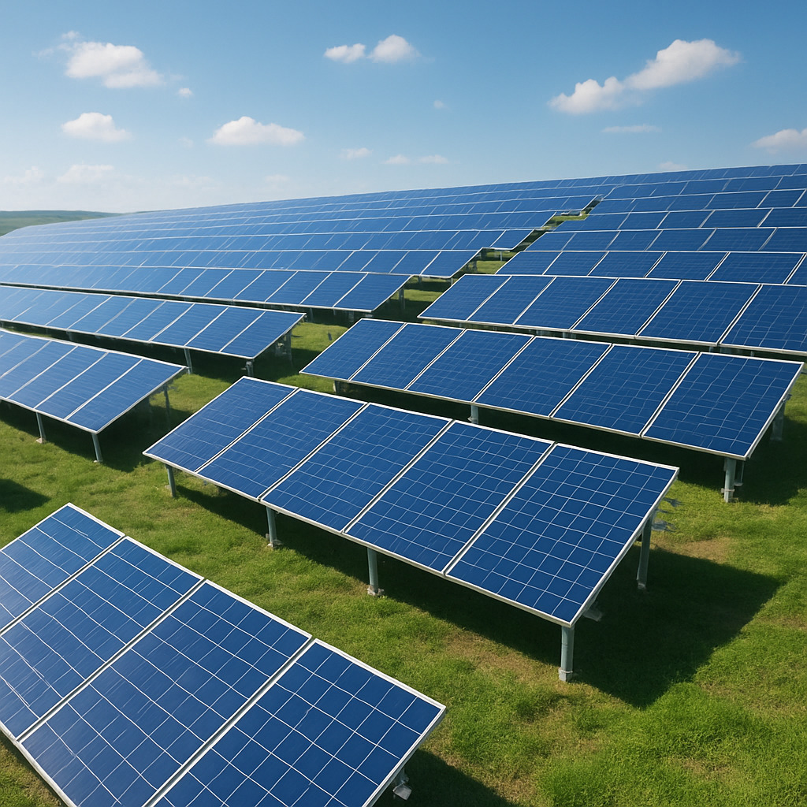

Energia Solar Inteligente
Autonomia energética conectada à inteligência digital regenerativa



Sobre o sistema
O Sistema de Energia Solar Inteligente Agroverso entrega geração fotovoltaica autônoma com integração ao nosso ecossistema digital. Com painéis de alta eficiência, inversores confiáveis e monitoramento via aplicativo ou dashboard web, o produtor rural e o gestor agroecológico assumem o controle total da energia com inteligência e independência.
BenefÃcios principais
- ⚡ Monitoramento remoto em tempo real por aplicativo ou navegador
- 🌱 Geração limpa e silenciosa com impacto ambiental positivo
- 📊 Gráficos automáticos de geração, consumo e eficiência do sistema
- 🌤️ Operação eficiente mesmo sob condições climáticas desafiadoras
- 🔋 CompatÃvel com baterias e sistemas hÃbridos de armazenamento inteligente
Aplicações recomendadas
Ideal para propriedades rurais, estufas, galpões agrÃcolas, sÃtios autônomos, agrovilas e comunidades regenerativas. Sua modularidade permite instalação em telhados, solo, carports e micro-redes isoladas.